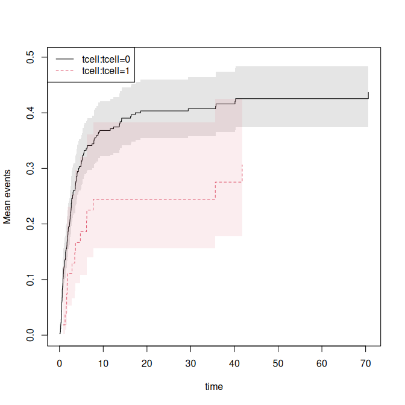
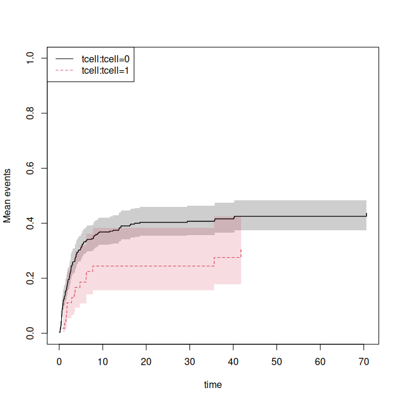

Influence functions in METS
Klaus Holst & Thomas Scheike
2026-08-24
Source:vignettes/mets-influence-functions.Rmd
mets-influence-functions.RmdInfluence functions are available from many models in the mets package. We here illustrate some of these models and how to get the influence functions, they can be combined using the estimate function of the lava-package.
First setting up some data
data(bmt)
set.seed(123)
bmt$time <- bmt$time+runif(408)*.001
bmt$id <- sample(200,408,replace=TRUE)
dfactor(bmt) <- cause1f~cause
drelevel(bmt,ref=3) <- cause3f~cause
dlevels(bmt)
#> cause1f #levels=:3
#> [1] "0" "1" "2"
#> -----------------------------------------
#> cause3f #levels=:3
#> [1] "2" "0" "1"
#> -----------------------------------------
data(hfactioncpx12)
hf <- hfactioncpx12
head(hf)
#> id entry time status trt treatment Count1
#> 1 1 0.00000000 0.60506502 1 0 0 0
#> 2 1 0.60506502 1.04859685 0 0 0 1
#> 3 2 0.00000000 0.06297057 1 0 0 0
#> 4 2 0.06297057 0.35865845 1 0 0 1
#> 5 2 0.35865845 0.39698836 1 0 0 2
#> 6 2 0.39698836 3.83299110 0 0 0 3
hf <- tie_breaker(hf,status="status",cause=1:2)
hf$x <- as.numeric(hf$treatment)
hf$z <- rnorm(741)[hf$id]
dd <- data.frame(treatment=levels(hf$treatment),id=1)
sum(duplicated(hf$time[hf$status %in% c(1,2)]))
#> [1] 0
sum(duplicated(hf$time[hf$status %in% c(0,1,2)]))
#> [1] 143
## also break ties for censorings
hf <- tie_breaker(hf,status="status",cause=0:2,cens.code=9)
#> 143 tied event time(s) found and perturbed.
sum(duplicated(hf$time[hf$status %in% c(0,1,2)]))
#> [1] 0Semi-parametric regression models
We can do Cox regression and get the influence functions of the baselines and regression coefficients
ph1 <- phreg(Event(time,cause==1)~tcell+platelet+age+cluster(id),bmt)
summary(ph1)
#>
#> n events
#> 408 161
#> coefficients:
#> Estimate S.E. dU^-1/2 P-value
#> tcell -0.652054 0.277897 0.276346 0.0190
#> platelet -0.519994 0.181005 0.187212 0.0041
#> age 0.408536 0.083495 0.089034 0.0000
#>
#> exp(coefficients):
#> Estimate 2.5% 97.5%
#> tcell 0.52097 0.30218 0.8982
#> platelet 0.59452 0.41696 0.8477
#> age 1.50461 1.27748 1.7721
head(iid(ph1))
#> tcell platelet age
#> 2 0.014946038 -0.006100130 -0.006682784
#> 3 -0.004200813 -0.005792569 -0.000102572
#> 4 0.007924581 -0.011634959 0.002771897
#> 5 -0.004747317 -0.005136761 0.001412101
#> 6 -0.006131101 -0.010574502 -0.002935765
#> 7 0.002535806 0.008858763 0.007097627
head(iid(ph1,time=50,all=TRUE))
#> tcell platelet age strata0
#> 2 0.014946038 -0.006100130 -0.006682784 -0.007516968
#> 3 -0.004200813 -0.005792569 -0.000102572 0.004284386
#> 4 0.007924581 -0.011634959 0.002771897 -0.004987960
#> 5 -0.004747317 -0.005136761 0.001412101 0.003937137
#> 6 -0.006131101 -0.010574502 -0.002935765 0.009912292
#> 7 0.002535806 0.008858763 0.007097627 -0.008365665
head(iid(ph1,time=50))
#> strata0
#> 2 -0.007516968
#> 3 0.004284386
#> 4 -0.004987960
#> 5 0.003937137
#> 6 0.009912292
#> 7 -0.008365665
###
e1 <- estimate(ph1,time=50,all=TRUE)
head(iid(e1))
#> tcell platelet age strata0
#> 2 0.014946038 -0.006100130 -0.006682784 -0.007516968
#> 3 -0.004200813 -0.005792569 -0.000102572 0.004284386
#> 4 0.007924581 -0.011634959 0.002771897 -0.004987960
#> 5 -0.004747317 -0.005136761 0.001412101 0.003937137
#> 6 -0.006131101 -0.010574502 -0.002935765 0.009912292
#> 7 0.002535806 0.008858763 0.007097627 -0.008365665
ph1 <- phreg(Event(time,cause==1)~strata(tcell)+platelet+age+cluster(id),bmt)
summary(ph1)
#>
#> n events
#> 408 161
#> coefficients:
#> Estimate S.E. dU^-1/2 P-value
#> platelet -0.520764 0.180913 0.187374 0.004
#> age 0.406167 0.082754 0.089045 0.000
#>
#> exp(coefficients):
#> Estimate 2.5% 97.5%
#> platelet 0.59407 0.41672 0.8469
#> age 1.50105 1.27631 1.7654
head(iid(ph1))
#> platelet age
#> 2 -0.006372121 -0.0066329508
#> 3 -0.005695993 -0.0001085265
#> 4 -0.011361595 0.0027228930
#> 5 -0.005137212 0.0014291557
#> 6 -0.010656401 -0.0027991372
#> 7 0.008925732 0.0070148058
head(iid(ph1,time=50,all=TRUE))
#> platelet age strata0 strata1
#> 2 -0.006372121 -0.0066329508 -0.007295809 0.0031900773
#> 3 -0.005695993 -0.0001085265 0.004157620 0.0010895333
#> 4 -0.011361595 0.0027228930 -0.004781941 0.0012834304
#> 5 -0.005137212 0.0014291557 0.003879996 0.0005203758
#> 6 -0.010656401 -0.0027991372 0.010019273 0.0028242705
#> 7 0.008925732 0.0070148058 -0.008306753 -0.0037794022
head(iid(ph1,time=50))
#> strata0 strata1
#> 2 -0.007295809 0.0031900773
#> 3 0.004157620 0.0010895333
#> 4 -0.004781941 0.0012834304
#> 5 0.003879996 0.0005203758
#> 6 0.010019273 0.0028242705
#> 7 -0.008306753 -0.0037794022
###
e1 <- estimate(ph1,time=50,all=TRUE)
head(iid(e1))
#> platelet age strata0 strata1
#> 2 -0.006372121 -0.0066329508 -0.007295809 0.0031900773
#> 3 -0.005695993 -0.0001085265 0.004157620 0.0010895333
#> 4 -0.011361595 0.0027228930 -0.004781941 0.0012834304
#> 5 -0.005137212 0.0014291557 0.003879996 0.0005203758
#> 6 -0.010656401 -0.0027991372 0.010019273 0.0028242705
#> 7 0.008925732 0.0070148058 -0.008306753 -0.0037794022We can do Fine-Gray regression and get the influence functions of the baselines and regression coefficients
ph1 <- cifregFG(Event(time,cause)~tcell+platelet+age+cluster(id),data=bmt)
summary(ph1)
#>
#> n events
#> 408 161
#>
#> 178 clusters
#> coefficients:
#> Estimate S.E. dU^-1/2 P-value
#> tcell -0.597004 0.273172 0.275787 0.0289
#> platelet -0.425813 0.183551 0.187722 0.0203
#> age 0.343796 0.079112 0.086281 0.0000
#>
#> exp(coefficients):
#> Estimate 2.5% 97.5%
#> tcell 0.55046 0.32226 0.9403
#> platelet 0.65324 0.45586 0.9361
#> age 1.41029 1.20773 1.6468
head(iid(ph1))
#> tcell platelet age
#> 2 0.012151181 -0.007082555 -5.018590e-03
#> 3 -0.004157820 -0.006032051 -8.474379e-05
#> 4 0.007330627 -0.009981470 2.278336e-03
#> 5 -0.004453002 -0.005149744 1.234029e-03
#> 6 -0.005880690 -0.011202951 -3.590135e-03
#> 7 0.002420534 0.008177986 6.283606e-03
head(iid(ph1,time=50,all=TRUE))
#> tcell platelet age strata0
#> 2 0.012151181 -0.007082555 -5.018590e-03 -0.004182423
#> 3 -0.004157820 -0.006032051 -8.474379e-05 0.003883112
#> 4 0.007330627 -0.009981470 2.278336e-03 -0.003302660
#> 5 -0.004453002 -0.005149744 1.234029e-03 0.003498871
#> 6 -0.005880690 -0.011202951 -3.590135e-03 0.008350805
#> 7 0.002420534 0.008177986 6.283606e-03 -0.005867509
head(iid(ph1,time=50))
#> strata0
#> 2 -0.004182423
#> 3 0.003883112
#> 4 -0.003302660
#> 5 0.003498871
#> 6 0.008350805
#> 7 -0.005867509
###
e1 <- estimate(ph1,time=50,all=TRUE)
head(iid(e1))
#> tcell platelet age strata0
#> 2 0.012151181 -0.007082555 -5.018590e-03 -0.004182423
#> 3 -0.004157820 -0.006032051 -8.474379e-05 0.003883112
#> 4 0.007330627 -0.009981470 2.278336e-03 -0.003302660
#> 5 -0.004453002 -0.005149744 1.234029e-03 0.003498871
#> 6 -0.005880690 -0.011202951 -3.590135e-03 0.008350805
#> 7 0.002420534 0.008177986 6.283606e-03 -0.005867509
ph1 <- cifregFG(Event(time,cause==1)~strata(tcell)+platelet+age+cluster(id),data=bmt)
summary(ph1)
#>
#> n events
#> 408 161
#>
#> 178 clusters
#> coefficients:
#> Estimate S.E. dU^-1/2 P-value
#> platelet -0.520764 0.180913 0.187374 0.004
#> age 0.406167 0.082754 0.089045 0.000
#>
#> exp(coefficients):
#> Estimate 2.5% 97.5%
#> platelet 0.59407 0.41672 0.8469
#> age 1.50105 1.27631 1.7654
head(iid(ph1))
#> platelet age
#> 2 -0.006372121 -0.0066329508
#> 3 -0.005695993 -0.0001085265
#> 4 -0.011361595 0.0027228930
#> 5 -0.005137212 0.0014291557
#> 6 -0.010656401 -0.0027991372
#> 7 0.008925732 0.0070148058
head(iid(ph1,time=50,all=TRUE))
#> platelet age strata0 strata1
#> 2 -0.006372121 -0.0066329508 -0.007295809 0.0031900773
#> 3 -0.005695993 -0.0001085265 0.004157620 0.0010895333
#> 4 -0.011361595 0.0027228930 -0.004781941 0.0012834304
#> 5 -0.005137212 0.0014291557 0.003879996 0.0005203758
#> 6 -0.010656401 -0.0027991372 0.010019273 0.0028242705
#> 7 0.008925732 0.0070148058 -0.008306753 -0.0037794022
head(iid(ph1,time=50))
#> strata0 strata1
#> 2 -0.007295809 0.0031900773
#> 3 0.004157620 0.0010895333
#> 4 -0.004781941 0.0012834304
#> 5 0.003879996 0.0005203758
#> 6 0.010019273 0.0028242705
#> 7 -0.008306753 -0.0037794022
###
e1 <- estimate(ph1,time=50,all=TRUE)
#> Warning in check_ic_mean_zero(ic_theta): IC does not have mean zero (max
#> |mean|/rms = 0.038). Using lava.options(check.ic = FALSE) disables the warning
#> globally.
head(iid(e1))
#> platelet age strata0 strata1
#> 2 -0.006372121 -0.0066329508 -0.007295809 0.0031900773
#> 3 -0.005695993 -0.0001085265 0.004157620 0.0010895333
#> 4 -0.011361595 0.0027228930 -0.004781941 0.0012834304
#> 5 -0.005137212 0.0014291557 0.003879996 0.0005203758
#> 6 -0.010656401 -0.0027991372 0.010019273 0.0028242705
#> 7 0.008925732 0.0070148058 -0.008306753 -0.0037794022For recurrent events we can fit a Ghosh-Lin regression model and get the influence functions of the baselines and regression coefficients
gl <- recreg(Event(entry,time,status)~treatment+z+cluster(id),data=hf,cause=1,death.code=2)
summary(gl)
#>
#> n events
#> 2132 1391
#>
#> 741 clusters
#> coefficients:
#> Estimate S.E. dU^-1/2 P-value
#> treatment1 -0.1105209 0.0789015 0.0538356 0.1613
#> z 0.0012211 0.0367129 0.0266279 0.9735
#>
#> exp(coefficients):
#> Estimate 2.5% 97.5%
#> treatment1 0.89537 0.76708 1.0451
#> z 1.00122 0.93171 1.0759
head(iid(gl))
#> treatment1 z
#> 1 -0.0001275342 1.283095e-05
#> 2 -0.0006361929 2.997455e-04
#> 3 0.0029926573 -1.089994e-03
#> 4 0.0013303978 -2.216254e-04
#> 5 0.0000509391 3.181415e-05
#> 6 0.0023710641 -1.429849e-03
head(iid(gl,time=50,all=TRUE))
#> treatment1 z strata0
#> 1 -0.0001275342 1.283095e-05 0.0003978164
#> 2 -0.0006361929 2.997455e-04 -0.0006983220
#> 3 0.0029926573 -1.089994e-03 -0.0004957541
#> 4 0.0013303978 -2.216254e-04 -0.0039680220
#> 5 0.0000509391 3.181415e-05 -0.0001140898
#> 6 0.0023710641 -1.429849e-03 -0.0043844982
head(iid(gl,time=50))
#> strata0
#> 1 0.0003978164
#> 2 -0.0006983220
#> 3 -0.0004957541
#> 4 -0.0039680220
#> 5 -0.0001140898
#> 6 -0.0043844982
###
e1 <- estimate(gl,time=50,all=TRUE)
head(iid(e1))
#> treatment1 z strata0
#> 1 -0.0001275342 1.283095e-05 0.0003978164
#> 2 -0.0006361929 2.997455e-04 -0.0006983220
#> 3 0.0029926573 -1.089994e-03 -0.0004957541
#> 4 0.0013303978 -2.216254e-04 -0.0039680220
#> 5 0.0000509391 3.181415e-05 -0.0001140898
#> 6 0.0023710641 -1.429849e-03 -0.0043844982
gls <- recreg(Event(entry,time,status)~strata(treatment)+z+cluster(id),data=hf,cause=1,death.code=2)
summary(gls)
#>
#> n events
#> 2132 1391
#>
#> 741 clusters
#> coefficients:
#> Estimate S.E. dU^-1/2 P-value
#> z 0.001616 0.036671 0.026638 0.9649
#>
#> exp(coefficients):
#> Estimate 2.5% 97.5%
#> z 1.00162 0.93215 1.0763
head(iid(gls))
#> z
#> 1 1.532050e-05
#> 2 2.739468e-04
#> 3 -1.104076e-03
#> 4 -2.252370e-04
#> 5 3.345811e-05
#> 6 -1.510453e-03
head(iid(gls,time=50,all=TRUE))
#> z strata0 strata1
#> 1 1.532050e-05 0.0004849534 -6.164305e-07
#> 2 2.739468e-04 -0.0028708288 -1.102243e-05
#> 3 -1.104076e-03 -0.0002250150 6.937035e-03
#> 4 -2.252370e-04 -0.0044967699 9.062561e-06
#> 5 3.345811e-05 -0.0001007888 -1.346210e-06
#> 6 -1.510453e-03 -0.0037431090 6.077407e-05
head(iid(gls,time=50))
#> strata0 strata1
#> 1 0.0004849534 -6.164305e-07
#> 2 -0.0028708288 -1.102243e-05
#> 3 -0.0002250150 6.937035e-03
#> 4 -0.0044967699 9.062561e-06
#> 5 -0.0001007888 -1.346210e-06
#> 6 -0.0037431090 6.077407e-05
###
e1 <- estimate(gls,time=50,all=TRUE)
#> Warning in check_ic_mean_zero(ic_theta): IC does not have mean zero (max
#> |mean|/rms = 0.0003). Using lava.options(check.ic = FALSE) disables the warning
#> globally.
head(iid(e1))
#> z strata0 strata1
#> 1 1.532050e-05 0.0004849534 -6.164305e-07
#> 2 2.739468e-04 -0.0028708288 -1.102243e-05
#> 3 -1.104076e-03 -0.0002250150 6.937035e-03
#> 4 -2.252370e-04 -0.0044967699 9.062561e-06
#> 5 3.345811e-05 -0.0001007888 -1.346210e-06
#> 6 -1.510453e-03 -0.0037431090 6.077407e-05
gls <- recreg(Event(entry,time,status)~strata(treatment)+cluster(id),data=hf,cause=1,death.code=2)
summary(gls)
#>
#> n events
#> 2132 1391
head(iid(gls,time=50,all=TRUE))
#> strata0 strata1
#> 1 0.0004826020 0.000000000
#> 2 -0.0029119802 0.000000000
#> 3 0.0000000000 0.006881006
#> 4 -0.0044466374 0.000000000
#> 5 -0.0001078009 0.000000000
#> 6 -0.0034098234 0.000000000
head(iid(gls,time=50))
#> strata0 strata1
#> 1 0.0004826020 0.000000000
#> 2 -0.0029119802 0.000000000
#> 3 0.0000000000 0.006881006
#> 4 -0.0044466374 0.000000000
#> 5 -0.0001078009 0.000000000
#> 6 -0.0034098234 0.000000000
###
e1 <- estimate(gls,time=50,all=TRUE)
#> Warning in check_ic_mean_zero(ic_theta): IC does not have mean zero (max
#> |mean|/rms = 0.0003). Using lava.options(check.ic = FALSE) disables the warning
#> globally.
head(iid(e1))
#> strata0 strata1
#> 1 0.0004826020 0.000000000
#> 2 -0.0029119802 0.000000000
#> 3 0.0000000000 0.006881006
#> 4 -0.0044466374 0.000000000
#> 5 -0.0001078009 0.000000000
#> 6 -0.0034098234 0.000000000
e1
#> Estimate Std.Err 2.5% 97.5% P-value
#> strata0 2.682 0.1544 2.379 2.985 1.399e-67
#> strata1 2.313 0.1497 2.019 2.606 7.910e-54Non-parametric marginal mean
We can estimate marginal mean or cumulative incidence for recurrent events or competing risks data
############# Marginal mean recurrent/cif
ms <- recurrent_marginal(Event(entry,time,status)~strata(treatment)+
cluster(id),data=hf,cause=1,death.code=2)
head(iid(ms,time=50))
#> strata0 strata1
#> 1 5.822025e-04 0.000000000
#> 2 -3.032866e-03 0.000000000
#> 3 0.000000e+00 0.006979682
#> 4 -4.441553e-03 0.000000000
#> 5 -8.948593e-05 0.000000000
#> 6 -3.704212e-03 0.000000000
###
e1 <- estimate(ms,time=50,all=TRUE)
head(iid(e1))
#> p1 p2
#> 1 5.822025e-04 0.000000000
#> 2 -3.032866e-03 0.000000000
#> 3 0.000000e+00 0.006979682
#> 4 -4.441553e-03 0.000000000
#> 5 -8.948593e-05 0.000000000
#> 6 -3.704212e-03 0.000000000
e1
#> Estimate Std.Err 2.5% 97.5% P-value
#> p1 2.682 0.1545 2.379 2.984 1.808e-67
#> p2 2.313 0.1496 2.020 2.607 6.405e-54
ms <- recurrent_marginal(Event(time,cause)~strata(tcell)+
cluster(id),data=bmt,cause=1,death.code=1:2)
plot(ms,se=1)
head(iid(ms,time=50))
#> strata0 strata1
#> 2 -0.002454943 0
#> 3 0.001625555 0
#> 4 -0.002657680 0
#> 5 0.001632639 0
#> 6 0.003336579 0
#> 7 -0.002453013 0
###
e1 <- estimate(ms,time=50,all=TRUE)
#> Warning in check_ic_mean_zero(ic_theta): IC does not have mean zero (max
#> |mean|/rms = 0.019). Using lava.options(check.ic = FALSE) disables the warning
#> globally.
head(iid(e1))
#> p1 p2
#> 2 -0.002454943 0
#> 3 0.001625555 0
#> 4 -0.002657680 0
#> 5 0.001632639 0
#> 6 0.003336579 0
#> 7 -0.002453013 0
e1
#> Estimate Std.Err 2.5% 97.5% P-value
#> p1 0.4254 0.06292 0.3021 0.5487 1.366e-11
#> p2 0.3062 0.04177 0.2243 0.3881 2.302e-13
summary(ms,time=50)
#> [[1]]
#> new.time mean se CI-2.5% CI-97.5% strata
#> 146 50 0.4254232 0.02791034 0.3740909 0.4837992 0
#>
#> [[2]]
#> new.time mean se CI-2.5% CI-97.5% strata
#> 16 50 0.3061988 0.07142631 0.193841 0.4836836 1Cumulative incidence
cif1 <- cif(Event(time,cause)~strata(tcell)+cluster(id),data=bmt,cause=1)
class(cif1)
#> [1] "recurrent" "recurrent"
plot(cif1,se=1,ylim=c(0,1))
summary(cif1,time=50)
#> [[1]]
#> new.time mean se CI-2.5% CI-97.5% strata
#> 146 50 0.4254232 0.02791034 0.3740909 0.4837992 0
#>
#> [[2]]
#> new.time mean se CI-2.5% CI-97.5% strata
#> 16 50 0.3061988 0.07142631 0.193841 0.4836836 1
head(iid(cif1,time=50))
#> strata0 strata1
#> 2 -0.002454943 0
#> 3 0.001625555 0
#> 4 -0.002657680 0
#> 5 0.001632639 0
#> 6 0.003336579 0
#> 7 -0.002453013 0
###
e1 <- estimate(cif1,time=50,all=TRUE)
#> Warning in check_ic_mean_zero(ic_theta): IC does not have mean zero (max
#> |mean|/rms = 0.019). Using lava.options(check.ic = FALSE) disables the warning
#> globally.
head(iid(e1))
#> p1 p2
#> 2 -0.002454943 0
#> 3 0.001625555 0
#> 4 -0.002657680 0
#> 5 0.001632639 0
#> 6 0.003336579 0
#> 7 -0.002453013 0
e1
#> Estimate Std.Err 2.5% 97.5% P-value
#> p1 0.4254 0.06292 0.3021 0.5487 1.366e-11
#> p2 0.3062 0.04177 0.2243 0.3881 2.302e-13
###
plot(ms,add=TRUE,se=1)
IPCW binomial regression
The binomial regression or ATE estimation
out <- binreg(Event(time,cause)~tcell+platelet,bmt,time=50)
summary(out)
#> n events
#> 408 160
#>
#> 408 clusters
#> coeffients:
#> Estimate Std.Err 2.5% 97.5% P-value
#> (Intercept) -0.180344 0.126755 -0.428779 0.068092 0.1548
#> tcell -0.418150 0.345415 -1.095152 0.258852 0.2261
#> platelet -0.437620 0.240971 -0.909914 0.034675 0.0694
#>
#> exp(coeffients):
#> Estimate 2.5% 97.5%
#> (Intercept) 0.83498 0.65130 1.0705
#> tcell 0.65826 0.33449 1.2954
#> platelet 0.64557 0.40256 1.0353
head(iid(out))
#> [,1] [,2] [,3]
#> 1 -0.006946365 0.004004187 0.006176992
#> 2 -0.006946365 0.004004187 0.006176992
#> 3 -0.006946365 0.004004187 0.006176992
#> 4 -0.006946365 0.004004187 0.006176992
#> 5 -0.006946365 0.004004187 0.006176992
#> 6 -0.006946365 0.004004187 0.006176992
###
e1 <- estimate(out)
e1
#> Estimate Std.Err 2.5% 97.5% P-value
#> (Intercept) -0.1803 0.1268 -0.4288 0.06809 0.15480
#> tcell -0.4181 0.3454 -1.0952 0.25885 0.22606
#> platelet -0.4376 0.2410 -0.9099 0.03467 0.06936
############# binregATE
dfactor(bmt) <- tcellf~tcell
out <- binregATE(Event(time,cause)~tcellf+platelet+age,bmt,time=50,
treat.model=tcellf~platelet+age)
summary(out)
#> n events
#> 408 160
#>
#> 408 clusters
#> coeffients:
#> Estimate Std.Err 2.5% 97.5% P-value
#> (Intercept) -0.198959 0.130988 -0.455690 0.057772 0.1288
#> tcellf1 -0.636904 0.356598 -1.335824 0.062015 0.0741
#> platelet -0.344862 0.246012 -0.827036 0.137312 0.1610
#> age 0.437247 0.107267 0.227007 0.647486 0.0000
#>
#> exp(coeffients):
#> Estimate 2.5% 97.5%
#> (Intercept) 0.81958 0.63401 1.0595
#> tcellf1 0.52893 0.26294 1.0640
#> platelet 0.70832 0.43734 1.1472
#> age 1.54844 1.25484 1.9107
#>
#> Average Treatment effects (G-formula) :
#> Estimate Std.Err 2.5% 97.5% P-value
#> treat0 0.4287591 0.0275128 0.3748351 0.4826831 0.0000
#> treat1 0.2900054 0.0659082 0.1608277 0.4191832 0.0000
#> treat:1-0 -0.1387537 0.0717769 -0.2794339 0.0019265 0.0532
#>
#> Average Treatment effects (double robust) :
#> Estimate Std.Err 2.5% 97.5% P-value
#> treat0 0.428172 0.027614 0.374049 0.482295 0.0000
#> treat1 0.250479 0.064788 0.123497 0.377461 0.0001
#> treat:1-0 -0.177693 0.070143 -0.315171 -0.040214 0.0113
head(iid(out))
#> iidriskDR iidriskDR iidriskG iidriskG
#> [1,] -0.001158950 -3.559294e-05 -0.001190662 -0.0001527258
#> [2,] -0.001201015 7.575169e-05 -0.001242361 0.0001091005
#> [3,] -0.001326438 3.357935e-04 -0.001355194 0.0006919586
#> [4,] -0.001320297 3.245871e-04 -0.001350607 0.0006680374
#> [5,] -0.001140698 -9.128235e-05 -0.001164429 -0.0002837906
#> [6,] -0.001398210 4.593159e-04 -0.001404039 0.0009475896
###
e1 <- estimate(out)
e1
#> Estimate Std.Err 2.5% 97.5% P-value
#> G-treat0 0.4288 0.02751 0.3748 0.4827 9.350e-55
#> G-treat1 0.2900 0.06591 0.1608 0.4192 1.082e-05
#> DR-treat0 0.4282 0.02761 0.3740 0.4823 3.190e-54
#> DR-treat1 0.2505 0.06479 0.1235 0.3775 1.106e-04IPCW RMST,RMTL for competing risks
The RMST, RMTL regression or ATE estimation
## rmst regression, exp-link
out <- resmeanIPCW(Event(time,cause!=0)~tcell+platelet,bmt,time=50)
summary(out)
head(iid(out))
e1 <- estimate(out)
e1
## rmtl for cause 1 regression, exp link
out <- resmeanIPCW(Event(time,cause)~tcell+platelet,bmt,time=50,cause=1)
summary(out)
head(iid(out))
e1 <- estimate(out)
e1
############# rmst for tcell
dfactor(bmt) <- tcellf~tcell
out <- resmeanATE(Event(time,cause!=0)~tcellf+platelet+age,bmt,time=50,
treat.model=tcellf~platelet+age)
summary(out)
head(iid(out))
e1 <- estimate(out)
e1
############# rmtl for tcell
dfactor(bmt) <- tcellf~tcell
out <- resmeanATE(Event(time,cause)~tcellf+platelet+age,bmt,time=50,
treat.model=tcellf~platelet+age)
summary(out)
head(iid(out))
e1 <- estimate(out)
e1Multinomial regression or cumulative odds regression
mlogit/cumoddsreg/ordreg
mreg <- mlogit(cause1f~tcell+platelet+age+cluster(id),bmt)
summary(mreg)
#>
#> n events
#> 1224 408
#>
#> 1224 clusters
#> coefficients:
#> Estimate S.E. dU^-1/2 P-value
#> Intercept_2 0.24467 0.14043 0.14216 0.0815
#> tcell_2 -0.53542 0.37547 0.37184 0.1539
#> platelet_2 -0.58808 0.25515 0.25586 0.0212
#> age_2 0.49490 0.10891 0.12175 0.0000
#> Intercept_3 -0.53964 0.16632 0.17204 0.0012
#> tcell_3 0.38680 0.36536 0.37086 0.2897
#> platelet_3 -0.31502 0.29177 0.28939 0.2803
#> age_3 0.19712 0.14056 0.13719 0.1608
#>
#> exp(coefficients):
#> Estimate 2.5% 97.5%
#> Intercept_2 1.27720 0.96990 1.6819
#> tcell_2 0.58542 0.28046 1.2220
#> platelet_2 0.55540 0.33684 0.9158
#> age_2 1.64033 1.32502 2.0307
#> Intercept_3 0.58296 0.42079 0.8076
#> tcell_3 1.47227 0.71943 3.0129
#> platelet_3 0.72977 0.41194 1.2928
#> age_3 1.21789 0.92462 1.6042
head(iid(mreg))
#> Intercept_2 tcell_2 platelet_2 age_2 Intercept_3
#> 2 -0.014254447 0.025694132 -0.012491589 -0.012440992 -1.453649e-02
#> 3 0.008359254 -0.005394066 -0.007348669 0.001187646 4.586367e-05
#> 4 -0.010036278 0.016471078 -0.013916981 0.001523439 -1.098403e-02
#> 5 0.007824367 -0.005810729 -0.006774654 0.002565090 -2.281226e-05
#> 6 0.018645474 -0.008881344 -0.016854869 -0.003379725 3.247483e-04
#> 7 -0.018517557 0.005132049 0.018218926 0.009378807 -1.867587e-02
#> tcell_3 platelet_3 age_3
#> 2 2.474362e-02 -1.104609e-02 -0.0121956488
#> 3 7.538407e-05 -7.627335e-05 0.0003152862
#> 4 1.652340e-02 -1.005109e-02 0.0004255889
#> 5 1.726132e-04 2.313986e-05 0.0001591605
#> 6 -5.969866e-05 -6.086186e-04 0.0009349518
#> 7 5.291768e-03 1.899612e-02 0.0087013726
dim(iid(mreg))
#> [1] 178 8
head(predict(mreg,bmt))
#> pred se lower upper
#> 1 0.2010931 0.06872502 0.06639454 0.3357917
#> 2 0.1938713 0.08223453 0.03269461 0.3550481
#> 3 0.1769981 0.12488450 -0.06777102 0.4217672
#> 4 0.1776947 0.12294999 -0.06328282 0.4186723
#> 5 0.2044721 0.06455910 0.07793853 0.3310056
#> 6 0.1695809 0.14614854 -0.11686495 0.4560268
head(predict(mreg,bmt,response=FALSE))
#> 0 1 2
#> 1 0.3319013 0.4670056 0.2010931
#> 2 0.2937226 0.5124061 0.1938713
#> 3 0.2289264 0.5940755 0.1769981
#> 4 0.2311887 0.5911166 0.1776947
#> 5 0.3542815 0.4412465 0.2044721
#> 6 0.2063692 0.6240499 0.1695809
mmreg <- cumoddsreg(cause~tcell+platelet+age+cluster(id),bmt)
summary(mmreg)
#> $baseline
#> Estimate Std.Err 2.5% 97.5% P-value
#> p1 0.7707 0.1731 0.4314 1.11 8.494e-06
#> p2 15.5881 0.1780 15.2392 15.94 0.000e+00
#>
#> $logor
#> Estimate Std.Err 2.5% 97.5% P-value
#> p1 -0.8830 0.4057 -1.678060 -0.08793 0.02950
#> p2 -0.2371 0.3092 -0.843188 0.36890 0.44313
#> p3 0.2796 0.1410 0.003137 0.55604 0.04746
#>
#> $or
#> Estimate 2.5% 97.5%
#> p1 0.4135423 0.1867359 0.915824
#> p2 0.7888793 0.4303365 1.446148
#> p3 1.3225835 1.0031415 1.743749
estimate(mmreg)
#> Estimate Std.Err 2.5% 97.5% P-value
#> p1 0.7707 0.1731 0.431409 1.10991 8.494e-06
#> p2 15.5881 0.1614 15.271680 15.90444 0.000e+00
#> p3 -0.8830 0.4057 -1.678060 -0.08793 2.950e-02
#> p4 -0.2371 0.3092 -0.843188 0.36890 4.431e-01
#> p5 0.2796 0.1410 0.003137 0.55604 4.746e-02
head(iid(mmreg))
#> [,1] [,2] [,3] [,4] [,5]
#> 2 0.000000000 0.000000000 0.000000000 0.000000000 0.000000000
#> 3 -0.008227177 -0.007003913 0.005301104 0.006896107 -0.000783069
#> 4 0.000000000 0.000000000 0.000000000 0.000000000 0.000000000
#> 5 -0.007677318 -0.006768413 0.005616101 0.006128991 -0.002215658
#> 6 -0.018543496 -0.014837900 0.009219265 0.016791973 0.004289844
#> 7 0.000000000 0.000000000 0.000000000 0.000000000 0.000000000
dim(iid(mmreg))
#> [1] 178 5
mmreg$ploglik
#> [1] -155.7988
library(lava)
or <- ordreg(cause ~ tcell+platelet+age,bmt,family=binomial(logit))
head(iid(or))
#> tcell platelet age
#> 1 -0.006894447 -0.004041466 -0.006128506 -0.007554247 0.0004011368
#> 2 -0.006644534 -0.003711172 -0.007426401 -0.006858489 0.0036114073
#> 3 -0.006164955 -0.003119347 -0.009569669 -0.005619761 0.0090349103
#> 4 -0.006183237 -0.003140944 -0.009495939 -0.005664770 0.0088450762
#> 5 -0.007032935 -0.004231371 -0.005352427 -0.007955581 -0.0014984436
#> 6 -0.005974851 -0.002899117 -0.010300426 -0.005161717 0.0109326740
e1 <- estimate(or,id=bmt$id)
head(iid(e1))
#> 0|1 1|2 tcell platelet age
#> 73 -0.010227718 0.0002072243 -0.006129221 -0.008786970 0.001386248
#> 36 -0.014840551 0.0040305513 -0.003491995 -0.025086608 0.010439204
#> 22 -0.011597941 0.0053142831 -0.015784041 -0.001864079 0.012038650
#> 122 0.019414693 -0.0068338141 0.002729122 0.027182651 -0.005539114
#> 172 -0.007032935 -0.0042313709 -0.005352427 -0.007955581 -0.001498444
#> 41 0.007316945 -0.0064915690 -0.066104936 0.018538767 0.022799084
e1
#> Estimate Std.Err 2.5% 97.5% P-value
#> 0|1 -0.5172 0.11425 -0.74109 -0.29325 5.989e-06
#> 1|2 0.5778 0.06921 0.44217 0.71348 6.907e-17
#> tcell 0.2003 0.32508 -0.43681 0.83748 5.377e-01
#> platelet -0.3624 0.22225 -0.79804 0.07318 1.030e-01
#> age 0.2615 0.10541 0.05487 0.46806 1.312e-02
mmreg <- cumoddsreg(cause1f~tcell+platelet+age,bmt)
head(iid(mmreg))
#> [,1] [,2] [,3] [,4] [,5]
#> [1,] 0.006894058 0.01555460 -0.006128464 -0.007553989 0.0004011703
#> [2,] 0.006644190 0.01459695 -0.007426362 -0.006858282 0.0036114117
#> [3,] 0.006164689 0.01284924 -0.009569636 -0.005619644 0.0090348644
#> [4,] 0.006182969 0.01291380 -0.009495905 -0.005664650 0.0088450321
#> [5,] 0.007032521 0.01610000 -0.005352383 -0.007955292 -0.0014983929
#> [6,] 0.005974614 0.01218723 -0.010300394 -0.005161632 0.0109326101
e1 <- estimate(mmreg)
e1
#> Estimate Std.Err 2.5% 97.5% P-value
#> time1 -0.5172 0.1158 -0.74410 -0.29024 7.940e-06
#> time2 1.0807 0.1483 0.79011 1.37138 3.142e-13
#> tcell -0.2003 0.3379 -0.86267 0.46200 5.533e-01
#> platelet 0.3624 0.2225 -0.07369 0.79855 1.034e-01
#> age -0.2615 0.1116 -0.48017 -0.04276 1.912e-02
head(iid(e1))
#> time1 time2 tcell platelet age
#> [1,] 0.006894058 0.01555460 -0.006128464 -0.007553989 0.0004011703
#> [2,] 0.006644190 0.01459695 -0.007426362 -0.006858282 0.0036114117
#> [3,] 0.006164689 0.01284924 -0.009569636 -0.005619644 0.0090348644
#> [4,] 0.006182969 0.01291380 -0.009495905 -0.005664650 0.0088450321
#> [5,] 0.007032521 0.01610000 -0.005352383 -0.007955292 -0.0014983929
#> [6,] 0.005974614 0.01218723 -0.010300394 -0.005161632 0.0109326101
mmreg <- cumoddsreg(cause1f~tcell+platelet+age+cluster(id),bmt)
e1 <- estimate(mmreg)
e1
#> Estimate Std.Err 2.5% 97.5% P-value
#> time1 -0.5172 0.1142 -0.74109 -0.29325 5.992e-06
#> time2 1.0807 0.1389 0.80859 1.35290 7.071e-15
#> tcell -0.2003 0.3251 -0.83748 0.43681 5.377e-01
#> platelet 0.3624 0.2223 -0.07318 0.79805 1.030e-01
#> age -0.2615 0.1054 -0.46805 -0.05487 1.312e-02
head(iid(e1))
#> time1 time2 tcell platelet age
#> 2 -0.011462855 -0.002720214 0.0185842607 -0.011803244 -0.0089772767
#> 3 0.004401152 -0.004556289 -0.0005263659 -0.002219572 0.0008051609
#> 4 -0.009939091 -0.003696645 0.0127157129 -0.011483192 0.0023344962
#> 5 0.004092121 -0.004921416 -0.0004432176 -0.001915816 0.0010014485
#> 6 0.009903966 -0.007748873 -0.0010381759 -0.005604048 0.0002601614
#> 7 -0.016979762 -0.010428201 0.0027494753 0.014864687 0.0095584017SessionInfo
sessionInfo()
#> R version 4.5.2 (2025-10-31)
#> Platform: x86_64-pc-linux-gnu
#> Running under: Ubuntu 26.04 LTS
#>
#> Matrix products: default
#> BLAS: /usr/lib/x86_64-linux-gnu/blas/libblas.so.3.12.1
#> LAPACK: /usr/lib/x86_64-linux-gnu/lapack/liblapack.so.3.12.1; LAPACK version 3.12.0
#>
#> locale:
#> [1] LC_CTYPE=en_US.UTF-8 LC_NUMERIC=C
#> [3] LC_TIME=en_US.UTF-8 LC_COLLATE=en_US.UTF-8
#> [5] LC_MONETARY=en_US.UTF-8 LC_MESSAGES=en_US.UTF-8
#> [7] LC_PAPER=en_US.UTF-8 LC_NAME=C
#> [9] LC_ADDRESS=C LC_TELEPHONE=C
#> [11] LC_MEASUREMENT=en_US.UTF-8 LC_IDENTIFICATION=C
#>
#> time zone: Europe/Copenhagen
#> tzcode source: system (glibc)
#>
#> attached base packages:
#> [1] stats graphics grDevices utils datasets methods base
#>
#> other attached packages:
#> [1] lava_1.9.3 mets_1.3.13 colorout_1.3-3
#>
#> loaded via a namespace (and not attached):
#> [1] cli_3.6.6 knitr_1.51 rlang_1.3.0
#> [4] xfun_0.60 otel_0.2.0 future.apply_1.20.2
#> [7] listenv_1.0.0 grid_4.5.2 evaluate_1.0.5
#> [10] mvtnorm_1.4-2 numDeriv_2016.8-1.1 timereg_2.0.7
#> [13] compiler_4.5.2 codetools_0.2-20 Rcpp_1.1.2
#> [16] future_1.75.0 lattice_0.23-1 digest_0.6.39
#> [19] parallelly_1.48.0 parallel_4.5.2 splines_4.5.2
#> [22] Matrix_1.7-6 tools_4.5.2 RcppArmadillo_15.4.2-1
#> [25] globals_0.19.1 survival_3.8-11